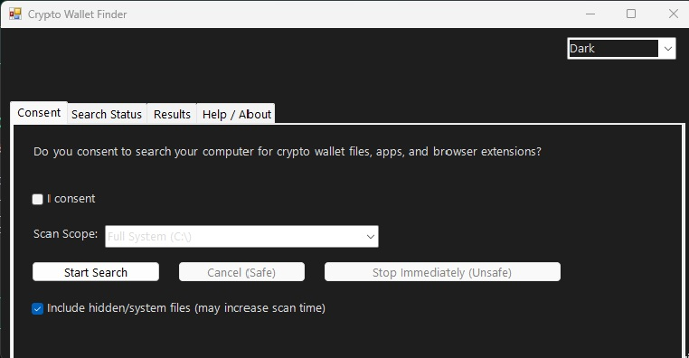

My Projects
This page showcases my technical projects in cybersecurity, automation, web design and just some fun stuff.
🪙 Crypto Wallet Finder
A PowerShell-based tool designed to locate cryptocurrency wallet files across a system.
- Automated installer with custom icon and branding
- Compatibility tested across PowerShell 5 and 7
- Log-driven debugging for reliable execution
- Modular code for easy updates and maintenance

Future Plans: Add status bars for each search.
⚡ Automation Scripts
A collection of PowerShell scripts focused on troubleshooting, packaging, and distribution.
- Handles version quirks between PowerShell 5 and 7
- Error logs with debugging
- Adaptable for both personal and enterprise use
Future Plans: Expand into a full automation toolkit with GUI.
🔒 Upcoming Projects
- Password Strength Checker: Real-time web tool to evaluate password strength.
- Penetration Testing Toolkit: Beginner-friendly scripts for ethical hacking.
- Cybersecurity Blog: Tutorials and case studies documenting my learning journey.